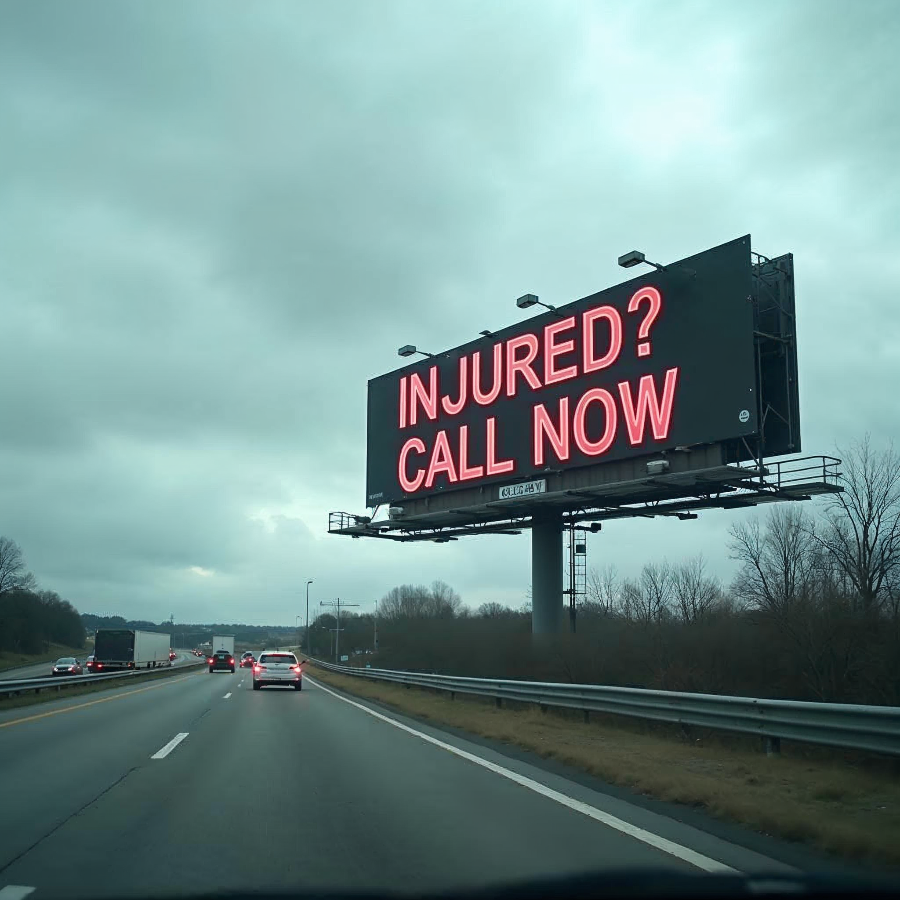

Four targeted audits that expose every gap across the full client acquisition journey — from brand awareness to closed case.

AwarenessBefore someone even needs a lawyer, have they already absorbed your brand? TV, billboards, sponsorships, community presence, social following — the air cover. We scan your social and traditional media footprint to show you where you're visible, and where you've gone dark.
Reputation, sentiment, review quality, website feel, messaging clarity. A firm could be everywhere and still feel generic or untrustworthy. This audit analyzes how your brand actually lands — what builds confidence, what raises doubt, and what registers as noise.
SEO rankings, paid search, LSAs, content depth, conversion optimization — the moment of intent where someone is comparing options. This audit reveals what's preventing buyers from seeing you first on Google, and what's stopping them from trusting you can deliver.
Intake process, CRM, call tracking, speed to lead, case management, follow-up sequences. It doesn't matter how visible you are if the phone rings six times and goes to voicemail. Benchmarked against elite law firms — find out what to fix first.
They pour budget into Google Ads while their intake is broken. Or they fix their website while nobody can find them. These audits isolate the actual bottleneck — so you fix the right problem first.
Get your free diagnostic in 60 seconds ↑
LawFirmAudits.com is the hub. Each audit connects to a dedicated tool built for that specific phase of the buyer journey. LegalBrandGrader is the first — it powers the Perception Audit and scores your firm's brand across 8 dimensions in 60 seconds.
More tools are being built to complete the picture. When they're live, you'll find them here — each one diagnostic-grade, law-firm-specific, and built by the team at Rankings.io.
Pick the audit that matches where you think the problem is. You might be surprised where the gap actually lives.